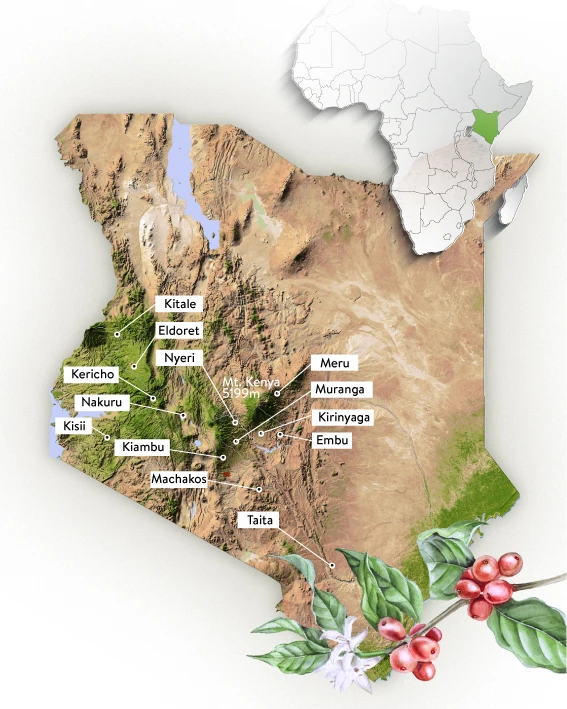
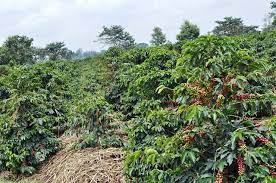
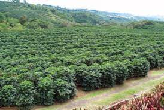
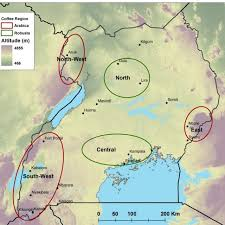

Some of the countries that grow coffee in Africa include:
Kenya
Uganda
Rwanda
Ethiopia and
Nigeria
Kenya
All Kenya coffee grown is Arabica coffee grown on the rich volcanic soil that is found in the highlands of the country. Today around 250,000 Kenyans are employed in the production of coffee. Most is produced by small land holders that are members of cooperatives that process their own coffee. Below is a map of Kenya showing some of the areas that grow coffee.

Uganda
Coffee is a major crop in Uganda, employing about 1.7 million smallholder farmers. The country is unique in that it grows the world's two major commercial coffee species, Robusta and Arabica. Rainfall-sensitive Robusta grows in the lowland regions. Arabica, highly sensitive to temperature, grows in the highlands.


Most of the area that grow coffee here are shown in the map below
